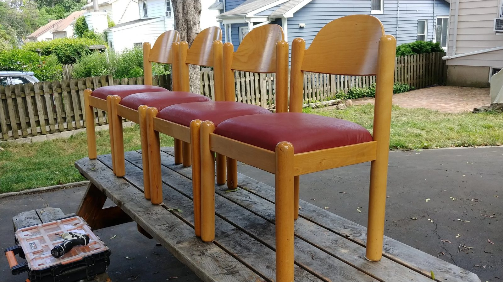
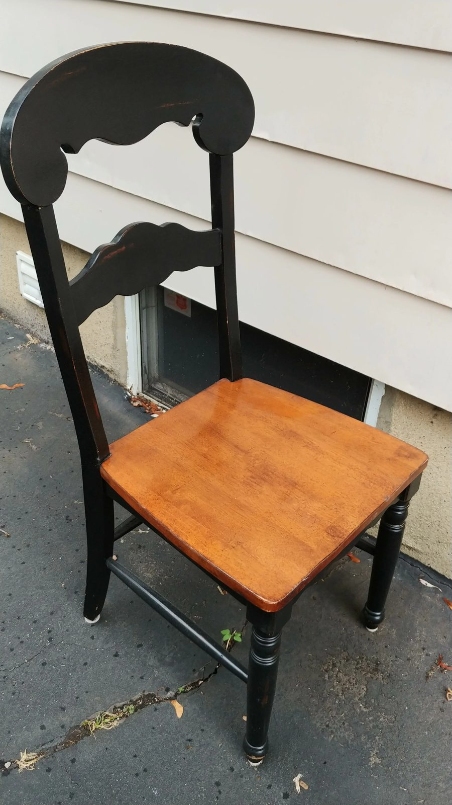
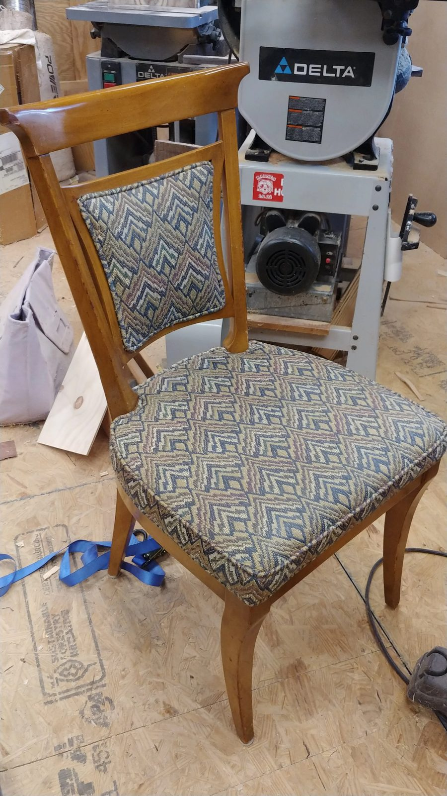
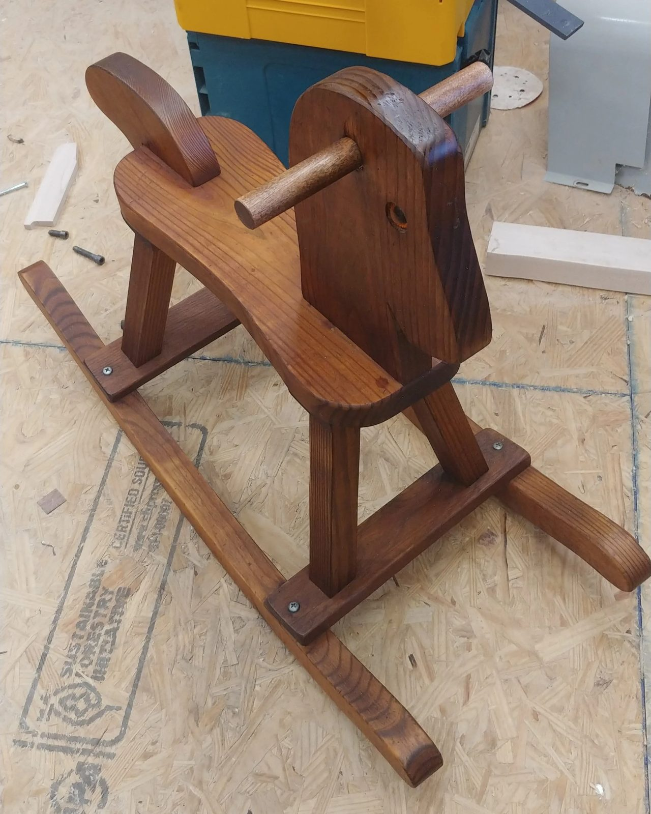
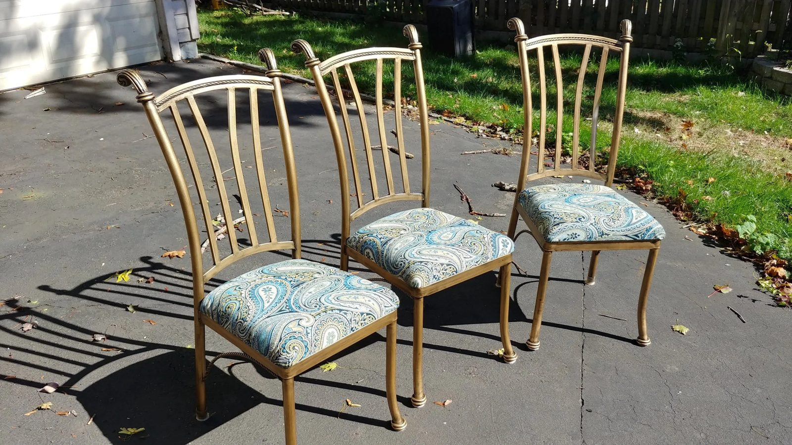
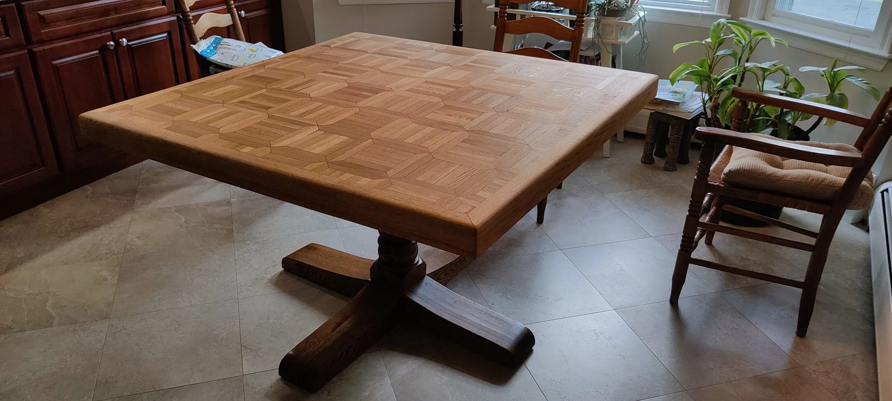
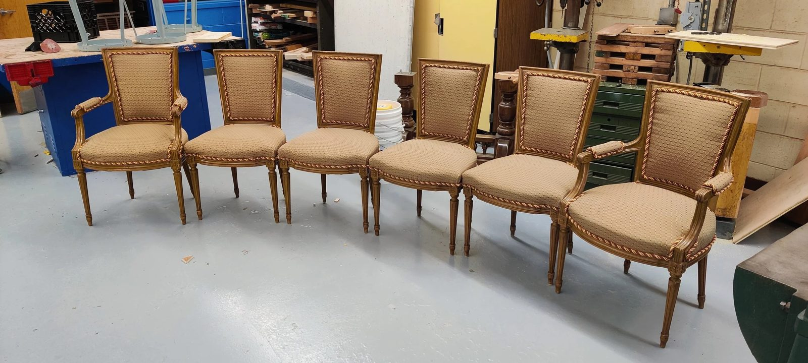
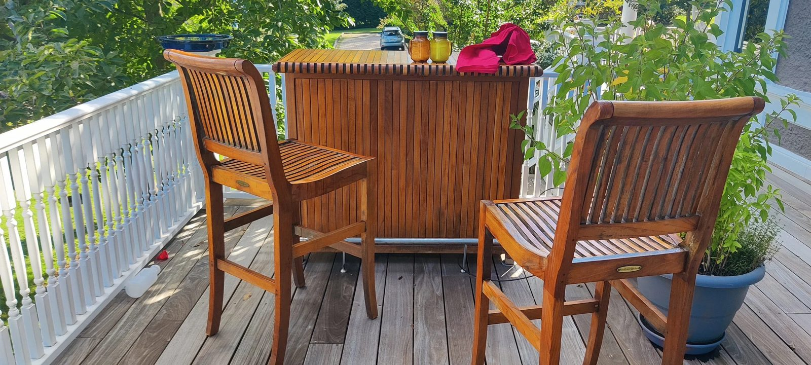

Restoration
I specialize in bringing your furniture back to the way it was when you first bought it — refinishing, reupholstery and structural repair for all interior furniture, serving West Orange and the surrounding Essex County towns.
Recent rescues
Refinished · reupholstered · repairedWater rings, sun-bleached tops, sagging seats, wobbly legs — most "beyond saving" furniture isn't. Here's some of what has come through the shop and gone home looking like it did on delivery day.









Got a piece that's seen better days?
Send me a photo and a sentence about what happened to it. I'll tell you honestly what it needs — and whether it's worth doing.
max@maxgrossman.com